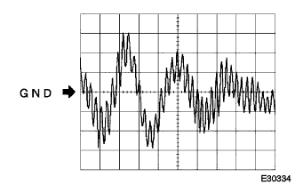

”ワイドマルチAVステーシヨン”システム ＥＣＵ端子配列 |
| 端子番号 | 端子記号 | 入出力 | テスター接続 プラス←→マイナス | 項目 | 測定条件 | 基準 | 基準外の場合の不具合症状 O:断線時 S:ボデーと短絡時 |
|---|---|---|---|---|---|---|---|
| 1 | FR+ | 出力 | A1←→A7 | 波形 | 音声出力中 | 音声に同期した波形が出力される | フロントスピーカASSY No．1(RH)およびスピーカASSY FR No．2(RH)から音声出ず |
| 2 | FL+ | 出力 | A2←→A7 | 波形 | 音声出力中 | 音声に同期した波形が出力される | フロントスピーカASSY No．1(LH)およびスピーカASSY FR No．2(LH)から音声出ず |
| 3 | ACC | 入力 | A3←→A7 | 電圧 | IGスイッチACC | 10-14V | O:システム作動せず S:ヒューズ切れ |
| 4 | B | 入力 | A4←→A7 | 電圧 | 常時 | 10-14V | O:システム作動せず S:ヒューズ切れ |
| 5 | FR- | 出力 | A5←→A7 | 波形 | 音声出力中 | 音声に同期した波形が出力される | フロントスピーカASSY No．1(RH)およびスピーカASSY FR No．2(RH)から音声出ず |
| 6 | FL- | 出力 | A6←→A7 | 波形 | 音声出力中 | 音声に同期した波形が出力される | フロントスピーカASSY No．1(LH)およびスピーカASSY FR No．2(LH)から音声出ず |
| 7 | E | - | A7←→ボデーアース | 導通 | 常時 | 導通あり | O:ノイズ微増 |
| 8 | ANT | 出力 | A8←→A7 | 電圧 | ラジオ(AM/FM)受信中 | 10-14V | AM/FM受信感度不良 |
| 10 | ILL+ | 入力 | A10←→A7 | 電圧 | ヘッドランプディマスイッチON | 10-14V | O:夜画面に切り替わらず S:ヒューズ切れ |
| 端子番号 | 端子記号 | 入出力 | テスター接続 プラス←→マイナス | 項目 | 測定条件 | 基準 | 基準外の場合の不具合症状 O:断線時 S:ボデーと短絡時 |
|---|---|---|---|---|---|---|---|
| 1 | RR+ | 出力 | B1←→A7 | 波形 | 音声出力中 | 音声に同期した波形が出力される | スピーカASSY RR(RH)から音声出ず |
| 2 | RL+ | 出力 | B2←→A7 | 波形 | 音声出力中 | 音声に同期した波形が出力される | スピーカASSY RR(LH)から音声出ず |
| 3 | RR- | 出力 | B3←→A7 | 波形 | 音声出力中 | 音声に同期した波形が出力される | スピーカASSY RR(RH)から音声出ず |
| 6 | RL- | 出力 | B6←→A7 | 波形 | 音声出力中 | 音声に同期した波形が出力される | スピーカASSY RR(LH)から音声出ず |
| 端子番号 | 端子記号 | 入出力 | テスター接続 プラス←→マイナス | 項目 | 測定条件 | 基準 | 基準外の場合の不具合症状 O:断線時 S:ボデーと短絡時 |
|---|---|---|---|---|---|---|---|
| 6 | MUTE | 入力 | C6←→A7 | 電圧 | オーディオ音声出力時 | 3.5V以上 | O:ポップ音発生 S:スピーカから音声出ず |
| 端子番号 | 端子記号 | 入出力 | テスター接続 プラス←→マイナス | 項目 | 測定条件 | 基準 | 基準外の場合の不具合症状 O:断線時 S:ボデーと短絡時 |
|---|---|---|---|---|---|---|---|
| 1 | IVI+ | 入力 | D1←→A7 | 波形 | ナビ案内音声出力中 | 音声に同期した波形が出力される | ナビ案内音声出ず |
| 2 | IVI- | 入力 | D2←→A7 | 波形 | ナビ案内音声出力中 | 音声に同期した波形が出力される | ナビ案内音声出ず |
| 4 | CMP+ | 出力 | D4←→A7 | 波形 | FM文字多重放送画面出力中 | 波形4 | FM文字多重放送表示せず |
| 5 | CMP- | 出力 | D5←→A7 | 波形 | FM文字多重放送画面出力中 | 波形4 | FM文字多重放送表示せず |
| 端子番号 | 端子記号 | 入出力 | テスター接続 プラス←→マイナス | 項目 | 測定条件 | 基準 | 基準外の場合の不具合症状 O:断線時 S:ボデーと短絡時 |
|---|---|---|---|---|---|---|---|
| 1 | PKB | 入力 | F1←→A7 | 電圧 | パーキングブレーキレバーを引く | 1V以下 | O:停車中もTV映像出ず |
| 3 | SPD | 入力 | F3←→A7 | 電圧 | 時速5km/h以上で走行する | 9V以上←→1V以下を繰り返す | 走行中でもTV映像が出る |
| 5 | REV | 入力 | F5←→A7 | 電圧 | シフトレバーRレンジ | 10-14V | 後退しても自車位置マークは前進する |
| 端子番号 | 端子記号 | 入出力 | テスター接続 プラス←→マイナス | 項目 | 測定条件 | 基準 | 基準外の場合の不具合症状 O:断線時 S:ボデーと短絡時 |
|---|---|---|---|---|---|---|---|
| 1 | VR | - | H1←→H6 | 導通 | IGスイッチOFF | 導通あり | 正常(画面ノイズ微増) |
| 2 | R | 入力 | H2←→H1 | 波形 | ナビ画面またはバックガイドモニター画面出画中 | 波形2 | ナビ画面が水色がかる |
| 3 | B | 入力 | H3←→H1 | 波形 | ナビ画面またはバックガイドモニター画面出画中 | 波形2 | ナビ画面が黄色がかる |
| 5 | TX+ | 入出力 | - | - | サービス検査 | - | O:ナビ画面出ず S:システム作動せず |
| 6 | VG | - | H6←→ボデーアース | 導通 | IGスイッチOFF | 導通あり | 正常(画面ノイズ微増) |
| 7 | G | 入力 | H7←→H1 | 波形 | 地図画面またはバックガイドモニター画面出画中 | 波形2 | ナビ画面がピンクがかる |
| 8 | SYNC | 入力 | H8←→H1 | 波形 | ナビ画面またはバックガイドモニター画面出画中 | 波形1 | O:ナビ画面同期乱れ激しい S:ナビ画面同期乱れゆっくり |
| 10 | TX- | 入出力 | - | - | サービス検査 | - | O:ナビ画面出ず S:システム作動せず |
| 端子番号 | 端子記号 | 入出力 | テスター接続 プラス←→マイナス | 項目 | 測定条件 | 基準 | 基準外の場合の不具合症状 O:断線時 S:ボデーと短絡時 |
|---|---|---|---|---|---|---|---|
| 1 | TVD2 | 出力 | I1←→A7 | 電圧 | TV画面出画中 | 受信状態により1V以下←→3V以上をくり返す | TV受信感度低下 |
| 2 | TVD1 | 出力 | I2←→A7 | 電圧 | TV画面出画中 | 受信状態により1V以下←→3V以上をくり返す | TV受信感度低下 |
| 3 | TV+ | 出力 | I3←→A7 | 電圧 | TV画面出画中 | 10-14V | O:TV受信感度低下 S:ヒューズ切れ |
| 4 | DGND | 入力 | I4←→A7 | 導通 | 常時 | 導通あり | 正常(ノイズ微増) |
| 5 | TV-ANT | 入力 | I5←→ボデーアース | 導通 | 常時 | 導通なし | TV受信感度低下 |
オシロスコープ波形
 |
波形1
| 項目 | 内容 |
|---|---|
| 測定端子 | SYNC←→VR |
| 計器セット | 500mV/DIV、10μS/DIV |
| 測定条件 | ナビ画面またはバックガイドモニター画面出画中 |
 |
波形2
| 項目 | 内容 |
|---|---|
| 測定端子 |
|
| 計器セット | 200mV/DIV、10μS/DIV |
| 測定条件 | ナビ画面またはバックガイドモニター画面出画中 |
|  |
波形4
| 項目 | 内容 |
|---|---|
| 測定端子 |
|
| 計器セット | 1V/DIV、50μS/DIV |
| 測定条件 | FM文字多重放送画面出力中 |

| 端子番号 | 端子記号 | 入出力 | テスター接続 プラス←→マイナス | 項目 | 測定条件 | 基準 | 基準外の場合の不具合症状 O:断線時 S:ボデーと短絡時 |
|---|---|---|---|---|---|---|---|
| 3 | SLD1 | - | A3←→ボデーアース | 導通 | 常時 | 導通あり | O:ナビ案内音声ノイズ微増 |
| 5 | SPD | 入力 | - | - | ナビ検査-車両信号&センサ検査(SPD信号状態) | - | 走行中に全スイッチ操作可 |
| 6 | CMP- | 入力 | A6←→A17 | 波形 | FM文字多重放送画面出力中 | 波形4 | FM文字多重放送表示せず |
| 7 | CMP+ | 入力 | A7←→A17 | 波形 | FM文字多重放送画面出力中 | 波形4 | FM文字多重放送表示せず |
| 9 | +B | 入力 | A9←→A17 | 電圧 | 常時 | 10-14V | O:地図画面出ず S:ヒューズ切れ |
| 12 | VOI+ | 出力 | A12←→A17 | 波形 | ナビ案内音声出力中 | 音声に同期した波形が出力される | ナビ案内音声出ず |
| 13 | VOI- | 出力 | A13←→A17 | 波形 | ナビ案内音声出力中 | 音声に同期した波形が出力される | ナビ案内音声出ず |
| 14 | REV | 入力 | - | - | ナビ車両信号検査 | - | ナビゲーション精度悪化 |
| 16 | RSG | - | A16←→A17 | 導通 | IGスイッチOFF | 導通あり | 正常(画面ノイズ微増) |
| 17 | GND | - | A17←→ボデーアース | 導通 | 常時 | 導通あり | 正常(ノイズ微増) |
| 18 | ACC | 入力 | A18←→A17 | 電圧 | IGスイッチACC | 10-14V | O:地図画面出ず S:ヒューズ切れ |
| 端子番号 | 端子記号 | 入出力 | テスター接続 プラス←→マイナス | 項目 | 測定条件 | 基準 | 基準外の場合の不具合症状 O:断線時 S:ボデーと短絡時 |
|---|---|---|---|---|---|---|---|
| 1 | VR | - | B1←→ボデーアース | 導通 | IGスイッチOFF | 導通あり | 正常(画面ノイズ微増) |
| 2 | R | 出力 | B2←→B1 | 波形 | ナビ画面出画中 | 波形2 | ナビ画面が水色がかる |
| 3 | B | 出力 | B3←→B1 | 波形 | ナビ画面出画中 | 波形2 | ナビ画面が黄色がかる |
| 5 | TX+ | 入出力 | - | - | サービス検査 | - | O:ナビ画面出ず S:システム作動せず |
| 6 | VG | - | B6←→ボデーアース | 導通 | IGスイッチOFF | 導通あり | 正常(画面ノイズ微増) |
| 7 | G | 出力 | B7←→B1 | 波形 | ナビ画面出画中 | 波形2 | ナビ画面がピンクがかる |
| 8 | SYNC | 出力 | B8←→B1 | 波形 | ナビ画面出画中 | 波形1 | O:ナビ画面同期乱れ激しい S:ナビ画面同期乱れゆっくり |
| 10 | TX- | 入出力 | - | - | サービス検査 | - | O:ナビ画面出ず S:システム作動せず |
| 端子番号 | 端子記号 | 入出力 | テスター接続 プラス←→マイナス | 項目 | 測定条件 | 基準 | 基準外の場合の不具合症状 O:断線時 S:ボデーと短絡時 |
|---|---|---|---|---|---|---|---|
| 1 | SW- | - | C1←→A17 | 導通 | 常時 | 導通あり |
|
| 3 | MIC+ | 入力 | C3←→C5 | 波形 | 音声入力中 | 音声に同期した波形が出力される |
|
| 4 | MACC | 出力 | C4←→A17 | 電圧 | IGスイッチACC | 5V |
|
| 5 | MIC- | - | C5←→ボデーアース | 導通 | 常時 | 導通あり |
|
| 6 | SGND | - | C6←→ボデーアース | 導通 | 常時 | 導通あり |
|
| 7 | SNSE | - | C7←→ボデーアース | 導通 | 常時 | 導通あり |
|
| 8 | SW+ | 入力 | C8←→A17 | 電圧 | 音声認識スイッチ押下せず→押下 | 5V→0-0.5V | 音声認識スイッチ作動せず |
オシロスコープ波形
|
波形1
| 項目 | 内容 |
|---|---|
| 測定端子 | SYNC←→VR |
| 計器セット | 500mV/DIV、10μS/DIV |
| 測定条件 | 地図画面出画中 |
|
波形2
| 項目 | 内容 |
|---|---|
| 測定端子 |
|
| 計器セット | 200mV/DIV、10μS/DIV |
| 測定条件 | 地図画面出画中 |
波形4
| 項目 | 内容 |
|---|---|
| 測定端子 |
|
| 計器セット | 1V/DIV、50μS/DIV |
| 測定条件 | FM文字多重放送画面出力中 |
 参照)
参照)